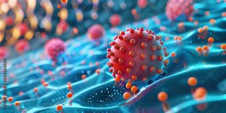
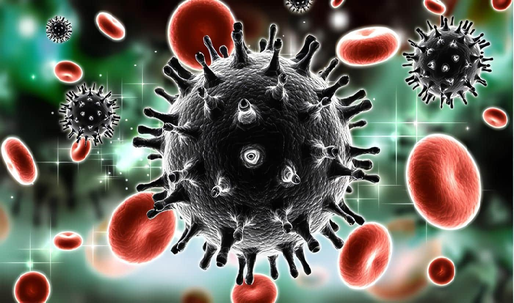

El VIH (virus de la inmunodeficiencia humana) es un virus que ataca a las células que ayudan al cuerpo a luchar contra las infecciones, haciendo que la persona sea más vulnerable a otras infecciones y enfermedades.
El VIH se transmite principalmente por vía sexual, sanguínea y de una persona embarazada a su bebé durante el embarazo, el parto o la lactancia. También existe riesgo cuando se reutilizan instrumentos cortantes o punzantes que pueden estar contaminados con sangre, como agujas, materiales para tatuajes o perforaciones y otros elementos similares. No se transmite por las actividades cotidianas como abrazar, saludar, compartir espacios o convivir con una persona que tiene VIH.
Para prevenir el VIH, se recomienda utilizar preservativo durante las relaciones sexuales, no compartir agujas ni jeringas y utilizar instrumentos esterilizados para realizar tatuajes o perforaciones. También existen medicamentos que ayudan a prevenir la infección.
El VIH se diagnostica mediante pruebas específicas que detectan la infección. Es importante realizarse la prueba para conocer el diagnóstico y comenzar el tratamiento lo antes posible.
El VIH se trata con medicamentos antirretrovirales que controlan el virus y ayudan a mantener el sistema inmunitario en buen estado. Aunque no existe una cura que elimine completamente el virus, el tratamiento permite llevar una vida larga y saludable.
El VIH es un virus que afecta al sistema inmunitario. Conocer sus formas de transmisión, prevenir la infección y realizar un diagnóstico temprano permite cuidar la salud y evitar nuevas transmisiones.

Sida significa síndrome de inmunodeficiencia adquirida. Es la etapa final de la infección por VIH.Ocurre cuando el sistema inmunitario del cuerpo está muy dañado por el virus. No todas las personas con VIH desarrollan sida.
El VIH se transmite principalmente por vía sexual, sanguínea y de una persona embarazada a su bebé durante el embarazo, el parto o la lactancia. También existe riesgo al reutilizar agujas u otros instrumentos cortantes o punzantes que estén contaminados con sangre, como los utilizados para realizar tatuajes o perforaciones. El VIH no se transmite por actividades cotidianas, como abrazar, saludar, compartir espacios o convivir con una persona que tiene VIH. Es importante recordar que el VIH es el virus que causa la infección, mientras que el SIDA es una etapa avanzada de esa infección.
El SIDA se puede prevenir evitando que la infección por VIH avance. Para ello, es importante prevenir el VIH, realizarse pruebas de diagnóstico y comenzar el tratamiento antirretroviral cuanto antes si se confirma la infección.
El SIDA se diagnostica mediante una evaluación médica que determina si la infección por VIH ha debilitado gravemente el sistema inmunitario o ha provocado determinadas enfermedades.
El tratamiento incluye medicamentos antirretrovirales para controlar el VIH y medicamentos para prevenir o tratar las enfermedades asociadas. El seguimiento médico ayuda a mejorar la salud y la calidad de vida de la persona.
El SIDA es la etapa más avanzada de la infección por VIH. Aunque es una condición grave, el diagnóstico y el tratamiento adecuados ayudan a controlar la infección y mejorar la calidad de vida. Por eso, es fundamental la prevención y el acceso a la atención médica.
